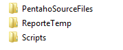
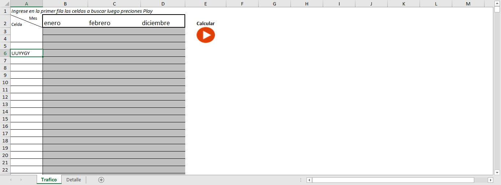
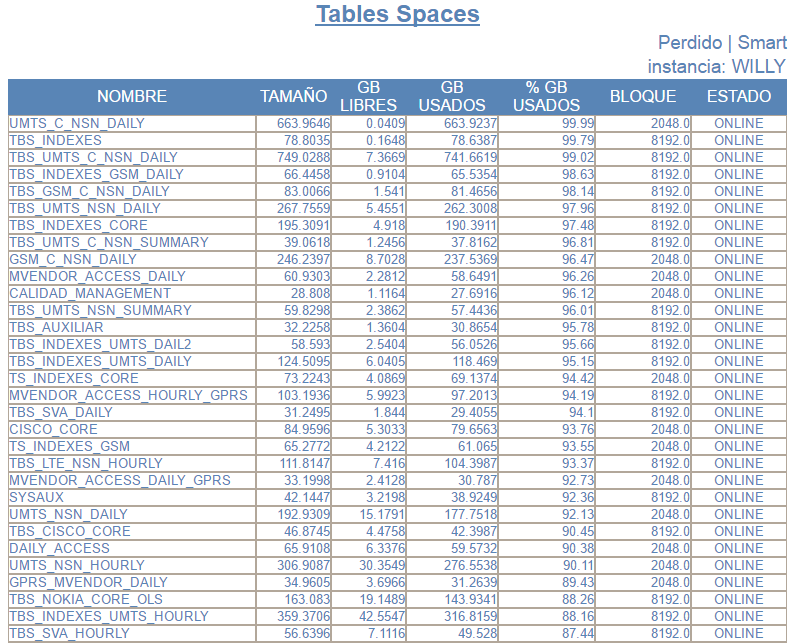

Reporte Table Space¶
1. OBJETIVO¶
El presente documento buscar explicar y detallar el proceso que genera el Reporte de Tablespace.
2. ALCANCE¶
Áreas involucradas: Performance de Red
3. DEFINICIONES¶
- FD: Fecha desde, en formato DD.MM.YYYY
- FH: Fecha hasta, en formato DD.MM.YYYY
- Falda: Servidor Linux en donde se encuentran los proyectos de Pentaho, es un entorno de desarrollo. El nombre es falda.claro.amx.
- Willy: Base de datos que se comunica con el Servidor Pedido.
- Perdido: Servidor UNIX en donde se importan los XML desde el proveedor, y en donde se encuentra Smart. El nombre es perdido.claro.amx y la dirección ip física es 10.92.50.83.
4. DESCRIPCIÓN GENERAL¶
REPORTE DE TABLESPACE
Este reporte se utiliza para consultar el estado actual de los tablespace en la base de datos Willy y en el Servidor Perdido.
Este reporte se ejecuta diariamente dos veces al día en el horario 7 a.m y 16 p.m
5. MACRO FLUJO DEL PROCESO¶

6. DESCRIPCIÓN DETALLADA¶
6.1. Datos de origen y datos destino¶
- Server Origen y Path: falda.claro.amx /calidad/CYR
- Frecuencia actualización: Frecuencia diaria.
- Tipo de Archivo de Salida: HTML
6.2. Shell Copiar Archivos Origen a Destino y limpieza de los mismos¶
Los scripts son los siguientes:
6.3. Listado de Tablas Utilizadas¶
Las tablas utilizadas son:
o DBA_FREE_SAPACE: Muestra el espacio libre, en donde se encuentran los tablespace.
o DBA_DATA_FILE: Muestra cómo se obtiene el tamaño del tablespace.
o DBA_TABLESPACE: Muestra cómo se obtiene el tamaño del bloque y el estado. El estado puede ser Online/ Offline.
6.4. Pentaho¶
Estructura del proyecto:
- Proceso Pentaho End to End
- Proceso Pentaho T_XML_GEN
En este proceso se consulta la base de datos y luego genera un xml con los datos extraidos.
- Proceso Pentaho XML_TO_HTML
En este proceso se utiliza el script xsl para convertir el archivo XML generado en un HTML
- Proceso Pentaho SEND_MAIL
En este proceso se adjunta el HTML para enviarlo vía email.
El HTML se muestra de la siguiente manera:
